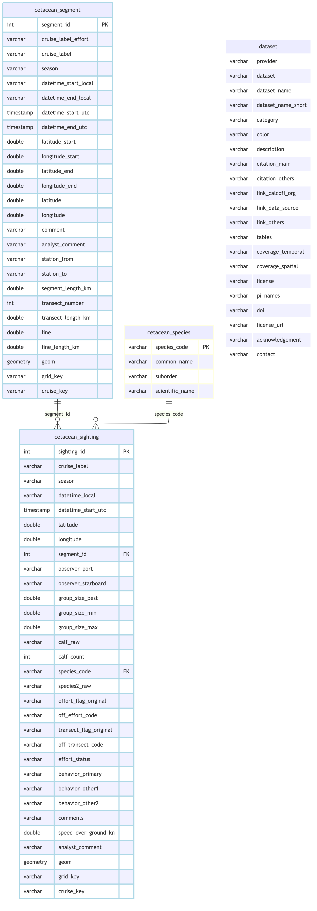
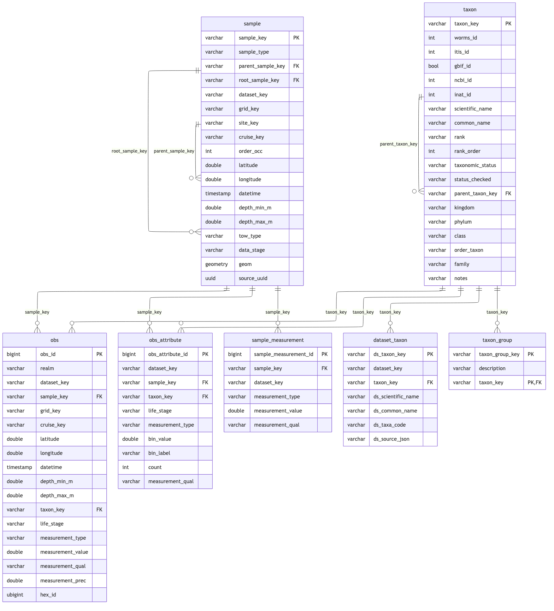

graph LR E[Effort CSV] --> SG[cetacean_segment<br/>effort segment] S[Sightings CSV] --> SI[cetacean_sighting<br/>one row per sighting] C[species_codes] --> SP[cetacean_species] SI -.segment_id.-> SG SI -.species_code.-> SP
Ingest SIO Cetacean Sightings (CalCOFI visual surveys)
Overview
Source: the curated cetacean visual-survey files in CalCOFI/marmam-app (data/whale_visual_data/), read from a pinned commit so a run reads bytes it can name:
CalCOFI_2004-2022_CombinedSightings.csv— one row per sighting, 67 cruises 2004-07 → 2022-11 (6,107 rows).CalCOFI_2004-2021_Effort_OnTransectOnEffortONLY_MNA.csv— on-effort, on-transect survey segments, 2004 → 2021 (1,988 rows, 8 of them placeholder rows for cruises with no effort).data/CalCOFI_species_codes.csv— the 34 species codes.
Both CSVs are Latin-1, not UTF-8 (a ° in a comment breaks a UTF-8 read). The app’s derived whale.csv / transect.csv are not read: they drop rows and rename cruises for display. The raw CountCOFI event log for 2023-11 (new-marine-mammal-data/CC-202311.txt) is not ingested either (Q08).
This is the dataset the catalog held as the sio_cetacean-sightings holding (EDI knb-lter-cce.262, 2005–2015); the marmam-app files are the lab’s wider, curated 2004–2022 version of it (Q02).
- Provider:
sio(Scripps Whale Acoustics Lab, Hildebrand / Baumann-Pickering) - Grain: a sighting, optionally inside an effort segment (
segment_id, NULL when off effort / off transect) - Taxonomy: species codes declared with
append_dataset_taxon()frommetadata/sio/cetacean-sightings/species_codes.csvand resolved against WoRMS; the unidentified classes and the two synonyms are keyed bymetadata/taxon_override.csv.
Setup
devtools::load_all(here::here("../calcofi4db"))
devtools::load_all(here::here("../calcofi4r"))
librarian::shelf(
CalCOFI/calcofi4db, CalCOFI/calcofi4r,
DBI, dplyr, DT, fs, glue, here, janitor, jsonlite, knitr,
lubridate, purrr, readr, sf, stringr, tibble, tidyr, quiet = T)
options(readr.show_col_types = F)
options(DT.options = list(scrollX = TRUE))
source(here("libs/ingest.R"))
cc <- read_calcofi_meta(here("ingest_sio_cetacean-sightings.qmd"))
provider <- cc$provider
dataset <- cc$dataset
tables_owned <- cc$tables_owned
ds_key <- as.character(glue("{provider}_{dataset}"))
dir_label <- ds_key
dir_parquet <- here(glue("data/parquet/{dir_label}"))
dir_stage <- cc_stage_path("parquet", dir_label, create = TRUE)
db_path <- here(glue("data/wrangling/{dir_label}.duckdb"))
dir_meta <- here(glue("metadata/{provider}/{dataset}"))
# downloads land here first (gitignored; archived to GCS below); a re-run reuses
# them, `overwrite_all` (libs/ingest.R) refetches
dir_dl <- here(glue("data/cache/{dir_label}")); dir_create(dir_dl)
# GCS uploads (source archive + parquet mirror). Set CALCOFI_SKIP_GCS=1 to render
# without publishing -- a review render, or an account without write access to
# gs://calcofi-files-public / gs://calcofi-db.
publish_to_gcs <- Sys.getenv("CALCOFI_SKIP_GCS") == ""
if (overwrite) {
if (file_exists(db_path)) file_delete(db_path)
if (file_exists(paste0(db_path, ".wal"))) file_delete(paste0(db_path, ".wal"))
}
dir_create(dirname(db_path))
con <- get_duckdb_con(db_path)
load_duckdb_extension(con, "spatial")Read Source Data
# CalCOFI/marmam-app at a pinned commit: the repository is a Shiny app whose
# data/ folder is edited by hand, so `main` is a moving target. Bump the SHA
# deliberately (and re-check the counts asserted below) to take new data.
src_sha <- "7bc0e18d7cb0ac7ba58d7bc4d47e57c50bd9bc80"
src_base <- glue("https://raw.githubusercontent.com/CalCOFI/marmam-app/{src_sha}/data")
src_paths <- c(
sightings = "whale_visual_data/CalCOFI_2004-2022_CombinedSightings.csv",
effort = "whale_visual_data/CalCOFI_2004-2021_Effort_OnTransectOnEffortONLY_MNA.csv",
species = "CalCOFI_species_codes.csv")
src_urls <- setNames(as.character(glue("{src_base}/{src_paths}")), names(src_paths))
src_files <- setNames(file.path(dir_dl, basename(src_paths)), names(src_paths))
downloaded <- character()
for (k in names(src_paths)) {
if (overwrite_all || !file_exists(src_files[[k]])) {
download.file(src_urls[[k]], src_files[[k]], quiet = TRUE, mode = "wb")
downloaded <- c(downloaded, k)
}
}
# when the bytes came down (the cached file's mtime), recorded against the URL
src_stamp <- stamp_source_access(files = unname(src_files)) |>
mutate(source = unname(src_urls),
method = ifelse(names(src_files) %in% downloaded, "download", "file_mtime"))
cat(glue("marmam-app@{substr(src_sha, 1, 7)}: {length(downloaded)} file(s) downloaded, ",
"{length(src_paths) - length(downloaded)} reused from {dir_dl}"), "\n")marmam-app@7bc0e18: 0 file(s) downloaded, 3 reused from /Users/bbest/Github/CalCOFI/.worktrees/workflows-pr117/data/cache/sio_cetacean-sightings if (publish_to_gcs) {
sync_to_gcs(local_dir = dir_dl, gcs_prefix = glue("archive/{provider}/{dataset}"),
bucket = "calcofi-files-public")
} else {
cat("CALCOFI_SKIP_GCS set -- sources NOT archived to gs://calcofi-files-public\n")
}rsync /Users/bbest/Github/CalCOFI/.worktrees/workflows-pr117/data/cache/sio_cetacean-sightings -> gs://calcofi-files-public/archive/sio/cetacean-sightingsSync complete: 3 copied, 0 removed (rsync)# A tibble: 3 × 4
file action size reason
<chr> <chr> <dbl> <chr>
1 <rsync> uploaded NA parallel rsync
2 <rsync> uploaded NA parallel rsync
3 <rsync> uploaded NA parallel rsync# Latin-1: a degree sign in a comment is byte 0xB0, which a UTF-8 read rejects
latin1 <- locale(encoding = "latin1")
d_si_raw <- read_csv(src_files[["sightings"]], col_types = cols(.default = "c"), locale = latin1)
d_ef_raw <- read_csv(src_files[["effort"]], col_types = cols(.default = "c"), locale = latin1)
d_sp_raw <- read_csv(src_files[["species"]], col_types = cols(.default = "c"))
# the counts profiled at this commit (2026-09-27); a changed file must be looked
# at, not absorbed
stopifnot(
"sightings row count changed at this commit" = nrow(d_si_raw) == 6107L,
"effort row count changed at this commit" = nrow(d_ef_raw) == 1988L,
"species row count changed at this commit" = nrow(d_sp_raw) == 34L)
cat(glue("sightings {nrow(d_si_raw)}, effort rows {nrow(d_ef_raw)}, species codes {nrow(d_sp_raw)}"), "\n")sightings 6107, effort rows 1988, species codes 34 Build Species Vocabulary
# the source list gives code, common name and suborder; the scientific name each
# code resolves from is authored once in species_codes.csv (unidentified classes
# name their rank's taxon; Oth names none and is excluded below)
d_species_meta <- read_csv(file.path(dir_meta, "species_codes.csv"), col_types = cols(.default = "c"))
d_species <- d_sp_raw |>
transmute(species_code = speciesCode, common_name = str_trim(speciesName),
suborder = taxonomy) |>
left_join(d_species_meta |> select(species_code, scientific_name), by = "species_code")
stopifnot(
"species_code must be unique" = !anyDuplicated(d_species$species_code),
"every source code must be in species_codes.csv" =
setequal(d_species$species_code, d_species_meta$species_code))
dbWriteTable(con, "cetacean_species", d_species, overwrite = TRUE)
cat(glue("cetacean_species: {nrow(d_species)} codes, ",
"{sum(is.na(d_species$scientific_name))} without a taxon (Oth)"), "\n")cetacean_species: 34 codes, 1 without a taxon (Oth) Build Effort Segment Table
# local clock time -> UTC (Q04). EDI knb-lter-cce.262.2 records each 2005-2015
# cruise's own GMT offset: most kept Pacific standard time (UTC-8) all year, even
# in summer; a few used PDT (UTC-7). Those cruises take their recorded offset
# (cruise_utc_offset.csv); the rest are read as America/Los_Angeles, daylight
# saving applied.
d_utc_offset <- read_csv(file.path(dir_meta, "cruise_utc_offset.csv"),
col_types = cols(utc_offset_h = "i", .default = "c"))
stopifnot("an offset is 7 or 8 h" = all(d_utc_offset$utc_offset_h %in% 7:8),
"one offset per label" = !anyDuplicated(d_utc_offset$cruise_label))
local_to_utc <- function(x, label) {
off <- d_utc_offset$utc_offset_h[match(label, d_utc_offset$cruise_label)]
la <- with_tz(suppressWarnings(mdy_hm(x, tz = "America/Los_Angeles")), "UTC")
fix <- suppressWarnings(mdy_hm(x, tz = "UTC")) + hours(off)
if_else(is.na(off), la, fix)
}
num <- function(x) suppressWarnings(as.numeric(x))
# the eight rows with no Segment.ID are per-cruise placeholders (length 0, no
# position): a cruise listed with no on-effort survey. Kept as a list, not a
# segment (Q07).
d_no_effort <- d_ef_raw |> filter(is.na(Segment.ID)) |> distinct(Cruise)
d_segment <- d_ef_raw |>
filter(!is.na(Segment.ID)) |>
transmute(
segment_id = as.integer(num(Segment.ID)),
cruise_label_effort = Cruise,
# CC2004-07 -> CC0407, the label the sightings carry
cruise_label = str_replace(Cruise, "^CC\\d{2}(\\d{2})-(\\d{2})$", "CC\\1\\2"),
season = str_trim(Season),
datetime_start_local = StartDateTimeLocal,
datetime_end_local = EndDateTimeLocal,
datetime_start_utc = local_to_utc(StartDateTimeLocal, cruise_label),
datetime_end_utc = local_to_utc(EndDateTimeLocal, cruise_label),
latitude_start = num(StartLat), longitude_start = num(StartLon),
latitude_end = num(EndLat), longitude_end = num(EndLon),
# the core carries one point per event: the segment midpoint
latitude = (latitude_start + latitude_end) / 2,
longitude = (longitude_start + longitude_end) / 2,
comment = Comment.ST,
analyst_comment = AG.Comment,
station_from = From.Station,
station_to = To.Station,
segment_length_km = num(Segment.length..km.),
transect_number = as.integer(num(Transect)),
transect_length_km = num(Transect.Length),
line = num(ccLine),
line_length_km = num(ccLineLength))
stopifnot(
"segment_id must be unique" = !anyDuplicated(d_segment$segment_id),
"every segment needs a start time" = !anyNA(d_segment$datetime_start_utc),
"every segment needs a midpoint" = !anyNA(d_segment$latitude) && !anyNA(d_segment$longitude),
"cruise_label must parse to CCYYMM" = all(str_detect(d_segment$cruise_label, "^CC\\d{4}$")))
dbWriteTable(con, "cetacean_segment", d_segment, overwrite = TRUE)
cat(glue("cetacean_segment: {nrow(d_segment)} segments over ",
"{n_distinct(d_segment$cruise_label)} cruises; ",
"{nrow(d_no_effort)} cruises listed with no effort: ",
"{paste(d_no_effort$Cruise, collapse = ', ')}"), "\n")cetacean_segment: 1980 segments over 64 cruises; 8 cruises listed with no effort: CC2004-01, CC2004-04, CC2010-04, CC2020-04, CC2020-08, CC2020-11, CC2021-01, CC2021-04 Build Sighting Table
d_sighting <- d_si_raw |>
mutate(sighting_id = row_number()) |>
transmute(
sighting_id,
cruise_label = Cruise,
season = str_trim(Season),
datetime_local = DateTimeLocal,
# '#REF!' on 36 CC0501 rows parses to NA (Q06)
datetime_start_utc = local_to_utc(DateTimeLocal, cruise_label),
latitude = num(DecLat),
longitude = num(DecLong),
segment_id = as.integer(num(`segID..NaN..Off.effort.and.or.off.transect..AG.`)),
observer_port = PortObs,
observer_starboard = StbdObs,
group_size_best = num(Best),
group_size_min = num(Min),
group_size_max = num(Max),
calf_raw = Calf,
# plain integers only; ND / nd / 0NA / UD / O / 1? / Juv stay NULL (Q09)
calf_count = if_else(str_detect(str_trim(Calf), "^\\d+$"),
as.integer(str_trim(Calf)), NA_integer_),
species_code = str_trim(Species1),
# only ever "100", on CC2111: not a second species (Q05)
species2_raw = Species2,
effort_flag_original = Original.Effort.Flag..ON.OFF.,
off_effort_code = OffEffortCode,
transect_flag_original = OriginalTransect.ON.OFF.,
off_transect_code = OffTransectCode,
effort_status = str_to_upper(str_trim(Adjusted.both.On.Effort.and.On.Transect)),
behavior_primary = PrimaryBehaviour,
behavior_other1 = OtherBehaviour1,
behavior_other2 = OtherBehaviour2,
comments = Comments,
speed_over_ground_kn = num(SOG..knots.),
analyst_comment = AGComments)Warning: There was 1 warning in `transmute()`.
ℹ In argument: `calf_count = if_else(...)`.
Caused by warning in `vec_if_else()`:
! NAs introduced by coercion# one position is on land (Sonora, 32.31 N -112.70 E; the app drops the row):
# keep the sighting, drop the position (Q11)
on_land <- with(d_sighting, !is.na(longitude) & longitude > -114)
d_sighting <- d_sighting |>
mutate(latitude = if_else(on_land, NA_real_, latitude),
longitude = if_else(on_land, NA_real_, longitude))
n_ref <- sum(d_si_raw$DateTimeLocal == "#REF!", na.rm = TRUE)
stopifnot(
"only the '#REF!' rows may lack a UTC time (Q06)" =
sum(is.na(d_sighting$datetime_start_utc)) == n_ref,
"exactly one position is on land (Q11)" = sum(on_land) == 1L,
"effort_status is ON, OFF or NULL" =
all(d_sighting$effort_status %in% c("ON", "OFF", NA)),
"every species_code is in the vocabulary" =
all(d_sighting$species_code %in% d_species$species_code),
"Species2 is never a species code (Q05)" =
all(d_sighting$species2_raw %in% c("100", NA)))
dbWriteTable(con, "cetacean_sighting", d_sighting, overwrite = TRUE)
# every segment_id a sighting carries must exist in the effort table
n_seg_orphan <- dbGetQuery(con, "
SELECT COUNT(*) FROM cetacean_sighting s
LEFT JOIN cetacean_segment g USING (segment_id)
WHERE s.segment_id IS NOT NULL AND g.segment_id IS NULL")[[1]]
cat(glue("cetacean_sighting: {nrow(d_sighting)} rows; {sum(!is.na(d_sighting$segment_id))} on a segment ",
"({n_seg_orphan} segment_id(s) not in the effort file); ",
"{n_ref} '#REF!' times; {sum(!is.na(d_sighting$calf_count))} with a calf count"), "\n")cetacean_sighting: 6107 rows; 2694 on a segment (1 segment_id(s) not in the effort file); 36 '#REF!' times; 3159 with a calf count One sighting references a segment id (236) that is absent from the effort file (99.96% resolve). Those sightings keep their segment_id in the source table but get no parent sample, so the core never points at a sample that does not exist.
Resolve cruise_key + Spatial
The sightings carry a survey label (CC0407), not a cruise, and no ship. As for farallon_bird-mammal, match_cruise_by_track() matches each sighting to the nearest CalCOFI station occupied within a day (the swfsc_ichthyo sample track, whose cruise_keys are exactly the cruise reference’s) and takes the majority vote per label. The effort segments (the ship’s own track) vote the same way, and the two votes must agree wherever both exist; each fills the other’s gaps: CC0501’s sightings have no time (Q06) but its effort does, and the 2022 surveys have sightings but no effort (Q07).
Nine surveys ran on cruises swfsc_ichthyo has no tows for (Sally Ride, Oceanus and Bold Horizon cruises, 2016-2022). Their cruise comes from cruise_label_crosswalk.csv: the one cruise the release’s CTD casts and bottles place on the same dates (Q14), checked here against the ship reference. The chunk below asserts that the crosswalk is used only where the ichthyo track has no occupation at all during a survey’s dates, never to overrule a track match.
load_prior_tables(con, parquet_dir = cc_stage_path("parquet", "swfsc_ichthyo"),
tables = c("grid"), geom_tables = c("grid"), as_view = TRUE)Loaded grid: 218 rows (VIEW) (GEOMETRY)# A tibble: 1 × 3
table rows has_geom
<chr> <dbl> <lgl>
1 grid 218 TRUE for (tbl in c("cetacean_segment", "cetacean_sighting")) {
add_point_geom(con, tbl, lon_col = "longitude", lat_col = "latitude")
assign_grid_key(con, tbl)
}Added geom column to cetacean_segment tableAssigned grid_key to cetacean_segment: in_grid = 1971, not_in_grid = 9Added geom column to cetacean_sighting tableAssigned grid_key to cetacean_sighting: in_grid = 6100, not_in_grid = 7dbExecute(con, glue(
"CREATE OR REPLACE VIEW cruise_track AS
SELECT DISTINCT cruise_key, datetime, latitude, longitude
FROM read_parquet('{cc_stage_path('parquet','swfsc_ichthyo','sample.parquet')}')
WHERE cruise_key IS NOT NULL AND datetime IS NOT NULL"))[1] 0# window_days = 1: the sighting time is converted from Pacific clock time, so an
# evening sighting falls on the next UTC day
cruise_match <- match_cruise_by_track(
con, "cetacean_sighting", "cruise_track",
datetime_col = "datetime_start_utc", lon_col = "longitude", lat_col = "latitude",
ref_datetime_col = "datetime", group_col = "cruise_label", window_days = 1)match_cruise_by_track: 5287/6107 cetacean_sighting rows got a cruise_key (86.6%) within 25 km / 1 d, by cruise_label consensus (min_share 0.5)# the effort segments vote on the same labels from the ship's own positions
seg_match <- match_cruise_by_track(
con, "cetacean_segment", "cruise_track",
datetime_col = "datetime_start_utc", lon_col = "longitude", lat_col = "latitude",
ref_datetime_col = "datetime", group_col = "cruise_label", window_days = 1)match_cruise_by_track: 1801/1980 cetacean_segment rows got a cruise_key (91%) within 25 km / 1 d, by cruise_label consensus (min_share 0.5)# surveys on cruises with no ichthyo tows: the cruise the release's CTD casts and
# bottles place on the same dates (Q14); each key must be the label's year-month
# plus its ship's NODC code, so a typo in the crosswalk cannot slip through
d_ship <- dbGetQuery(con, glue(
"SELECT ship_key, ship_nodc FROM read_parquet('{cc_stage_path('parquet','swfsc_ichthyo','ship.parquet')}')"))
d_xwalk <- read_csv(file.path(dir_meta, "cruise_label_crosswalk.csv"), col_types = cols(.default = "c")) |>
left_join(d_ship, by = "ship_key") |>
mutate(minted = paste0("20", substr(cruise_label, 3, 4), "-", substr(cruise_label, 5, 6), "-", ship_nodc))
stopifnot(
"every crosswalk ship is in the ship reference" = !anyNA(d_xwalk$ship_nodc),
"each crosswalk cruise_key is the label's year-month + its ship's NODC code" =
all(d_xwalk$minted == d_xwalk$cruise_key))
d_labels <- dbGetQuery(con, "
SELECT cruise_label FROM cetacean_sighting UNION SELECT cruise_label FROM cetacean_segment")
grp <- d_labels |>
left_join(cruise_match$groups |> select(cruise_label, sighting_key = cruise_key,
sighting_votes = votes, sighting_share = share),
by = "cruise_label") |>
left_join(seg_match$groups |> select(cruise_label, segment_key = cruise_key,
segment_votes = votes, segment_share = share),
by = "cruise_label") |>
left_join(d_xwalk |> select(cruise_label, crosswalk_key = cruise_key), by = "cruise_label") |>
mutate(
cruise_key = coalesce(sighting_key, segment_key, crosswalk_key),
cruise_key_method = case_when(
!is.na(sighting_key) ~ "track: sightings",
!is.na(segment_key) ~ "track: effort",
!is.na(crosswalk_key) ~ "crosswalk: release CTD/bottle (Q14)")) |>
arrange(cruise_label)
stopifnot(
"the sighting and segment votes agree wherever both resolve a label" =
with(grp, all(is.na(sighting_key) | is.na(segment_key) | sighting_key == segment_key)),
"the crosswalk only fills labels the track cannot resolve" =
with(grp, all(is.na(crosswalk_key) | (is.na(sighting_key) & is.na(segment_key)))))
# each fills the other's gaps (CC0501 sightings from its effort; 2022 effort-less
# labels from their sightings; the Q14 surveys from the crosswalk)
dbWriteTable(con, "_label_ck", grp |> select(cruise_label, cruise_key), overwrite = TRUE)
for (tbl in c("cetacean_sighting", "cetacean_segment"))
dbExecute(con, glue("
UPDATE {tbl} t SET cruise_key = l.cruise_key FROM _label_ck l
WHERE t.cruise_key IS NULL AND l.cruise_key IS NOT NULL AND l.cruise_label = t.cruise_label"))
dbExecute(con, "DROP TABLE _label_ck")[1] 0n_sight_ck <- dbGetQuery(con, "SELECT COUNT(cruise_key) FROM cetacean_sighting")[[1]]
cat(glue("cruise_key resolved on {n_sight_ck}/{cruise_match$total} sightings ",
"({round(100 * n_sight_ck / cruise_match$total, 1)}%; ",
"{cruise_match$matched} by their own label vote)"), "\n")cruise_key resolved on 6107/6107 sightings (100%; 5287 by their own label vote) grp |>
datatable(caption = "Cruise label -> cruise_key: sighting vote, effort-segment vote, crosswalk (NULL = unresolved)",
rownames = FALSE, filter = "top") |>
formatPercentage(c("sighting_share", "segment_share"), 1)dupe <- grp$cruise_key[!is.na(grp$cruise_key)]
dupe <- dupe[duplicated(dupe)]
n_seg_null <- dbGetQuery(con, "SELECT COUNT(*) FROM cetacean_segment WHERE cruise_key IS NULL")[[1]]
unresolved_labels <- grp$cruise_label[is.na(grp$cruise_key)]
xwalk_labels <- grp$cruise_label[grp$cruise_key_method %in% "crosswalk: release CTD/bottle (Q14)"]
xw_sql <- paste0("'", c(xwalk_labels, "_"), "'", collapse = ", ")
# a label keyed by the crosswalk (or left unresolved) must be one whose cruise the
# ichthyo track lacks entirely (no occupation within a day of its dates), never a
# failed match
dbWriteTable(con, "_off_track", tibble(cruise_label = c(unresolved_labels, xwalk_labels)),
overwrite = TRUE)
d_unres_track <- dbGetQuery(con, "
WITH lab AS (
SELECT cruise_label,
MIN(datetime_start_utc) :: DATE AS dmin,
MAX(datetime_start_utc) :: DATE AS dmax
FROM (SELECT cruise_label, datetime_start_utc FROM cetacean_sighting
UNION ALL SELECT cruise_label, datetime_start_utc FROM cetacean_segment)
GROUP BY 1)
SELECT l.cruise_label, COUNT(*) AS n_track
FROM lab l JOIN cruise_track t ON t.datetime :: DATE BETWEEN l.dmin - 1 AND l.dmax + 1
WHERE l.cruise_label IN (SELECT cruise_label FROM _off_track)
GROUP BY 1")
dbExecute(con, "DROP TABLE _off_track")[1] 0stopifnot(
"a crosswalk or unresolved label has no ichthyo occupation during its dates (Q14)" =
nrow(d_unres_track) == 0,
"every cruise label must resolve to a distinct cruise_key" = length(dupe) == 0,
"a track-resolved cruise_key exists in the track (no dangling FK)" =
dbGetQuery(con, glue("
SELECT COUNT(*) FROM cetacean_sighting WHERE cruise_key IS NOT NULL
AND cruise_label NOT IN ({xw_sql})
AND cruise_key NOT IN (SELECT cruise_key FROM cruise_track)"))[[1]] == 0)
cat(glue(
"{sum(!is.na(grp$cruise_key))}/{nrow(grp)} labels resolved ({length(xwalk_labels)} by the crosswalk); unresolved: ",
"{paste(grp$cruise_label[is.na(grp$cruise_key)], collapse = ', ')}; ",
"{n_seg_null} segment(s) without a cruise_key"), "\n")67/67 labels resolved (9 by the crosswalk); unresolved: ; 0 segment(s) without a cruise_key Load Dataset Metadata + Schema
this_provider <- provider; this_dataset <- dataset
d_dataset <- ingest_yaml_to_dataset_df(read_ingest_yaml(here())) |>
filter(provider == this_provider, dataset == this_dataset)
stopifnot(nrow(d_dataset) == 1)
dbWriteTable(con, "dataset", as.data.frame(d_dataset), overwrite = TRUE)
# the registry this dataset's types were added to (metadata/measurement_type.csv,
# 2026-09-27): read, never re-derived, and asserted complete
d_meas_type <- read_measurement_type(here("metadata/measurement_type.csv"))
my_types <- c("group_size", "group_size_min", "group_size_max", "calf_count",
"behavior", "effort_status", "transect_length")
stopifnot("every type this ingest emits is registered" =
all(my_types %in% d_meas_type$measurement_type))
dbWriteTable(con, "measurement_type", as.data.frame(d_meas_type), overwrite = TRUE)
# the SOURCE shape; the published shape is the core (Emit Core Tables)
src_rels <- list(
primary_keys = list(cetacean_segment = "segment_id", cetacean_sighting = "sighting_id",
cetacean_species = "species_code"),
foreign_keys = list(
list(table = "cetacean_sighting", column = "segment_id",
ref_table = "cetacean_segment", ref_column = "segment_id"),
list(table = "cetacean_sighting", column = "species_code",
ref_table = "cetacean_species", ref_column = "species_code")))
cc_erd(con, tables = c("cetacean_segment", "cetacean_sighting", "cetacean_species", "dataset"),
rels = src_rels,
colors = list(lightblue = c("cetacean_segment", "cetacean_sighting"),
lightyellow = "cetacean_species", white = "dataset"))
Questions for Data Providers
questions_datatable(
here(cc$questions_file),
caption = "Questions for the SIO cetacean sightings data providers (ranked)")Emit Core Tables
What the source becomes, and what it does not:
| source | core | transform |
|---|---|---|
cetacean_segment row |
sample (transect) |
key sio_cetacean-sightings:transect:<segment_id>; midpoint position; start time |
cetacean_segment.segment_length_km |
sample_measurement transect_length |
km |
cetacean_sighting row |
sample (sighting) |
every sighting; parent = its transect when segment_id resolves, else none |
cetacean_sighting.group_size_best |
obs group_size |
only where Best > 0: a Best of 0 or blank (10 sightings) keeps its sample row and publishes no obs or attribute (Q13); measurement_qual NULL |
effort_status |
obs_attribute effort_status |
bin_label ON / OFF, bin_value 1 / 0; none where the flag is blank |
group_size_min / _max |
obs_attribute group_size_min / _max |
value in count |
calf_count |
obs_attribute calf_count, life_stage = calf |
plain integers only (Q09) |
behavior_primary / _other1 / _other2 |
obs_attribute behavior |
one row per code token, bin_label = the code (codebook Q03), bin_value = 1 / 2 / 3 for primary / other1 / other2 |
species_code |
obs.taxon_key via dataset_taxon |
Oth keeps a NULL taxon |
Not published (kept in the archived source): observer initials, original effort/transect flags and their off-codes, comments, speed over ground, species2_raw, calf_raw, segment start/end coordinates and times, from/to stations, transect and line lengths.
Taxon vocabulary
mt_taxon <- read_csv(here("metadata/measurement_taxon.csv"),
col_types = cols(worms_id = "i", itis_id = "i",
bin_value = "d", .default = "c")) |>
filter(dataset_key == ds_key)
tx_over <- read_csv(here("metadata/taxon_override.csv"), show_col_types = FALSE)
obs_codes <- unique(d_sighting$species_code)
# not a taxon: "Other"; its sightings keep a NULL taxon_key
excluded_codes <- intersect(obs_codes, d_species$species_code[is.na(d_species$scientific_name)])
stopifnot("Oth is the only code without a taxon" = identical(excluded_codes, "Oth"))
# the declaration: code, the name the code is resolved from, and the common name.
# The source supplied no ids, so none ride along as ds_source_json.
# only the codes the sightings use: an unused code (Be) would be resolved for nothing
d_vocab <- d_species |>
filter(!is.na(scientific_name), species_code %in% obs_codes) |>
transmute(ds_taxa_code = species_code, ds_scientific_name = scientific_name,
ds_common_name = common_name)
n_staged <- append_dataset_taxon(con, ds_key, d_vocab)
ensure_taxon_xref(con, mt_taxon, tx_over, cache_csv = here("metadata/taxon_xref.csv"))taxon xref: 0 TSN + 7 AphiaID + 20 name requested; 0 to fetch, 27 cachedtaxon xref: 0 TSN + 20 AphiaID + 0 name requested; 0 to fetch, 20 cached_taxon_xref: 47 cross-reference rows (47 with worms_id, 25 with itis_id, 0 re-keyed)ensure_taxon_lineage(con, mt_taxon, tx_over, cache_csv = here("metadata/taxon_lineage.csv"))taxon lineage: 27 WoRMS + 0 ITIS requested; 0 to fetch, 27 cachedtaxon lineage: 0 Aves taxa keyed on ITIS, 27 taxa on WoRMStaxon xref: 0 TSN + 58 AphiaID + 0 name requested; 0 to fetch, 58 cachedtaxon: 58 lineage rows for 27 taxa (0 unresolved)n_taxon <- build_taxon_reference(con, mt_taxon, tx_over)
n_ds_taxon <- resolve_dataset_taxon(con, mt_taxon, tx_over)taxon overrides ('sio_cetacean-sightings'): 11 registry row(s) matched 11 vocabulary row(s): 11 applied, 0 skippedn_tx_group <- build_taxon_group(con, read_taxon_group_rules(here("metadata/taxon_group.csv")))
chk <- check_dataset_taxon(con, ds_key, codes = setdiff(obs_codes, excluded_codes))check_dataset_taxon('sio_cetacean-sightings'): 32 taxa, 32 keyed by an authority, 0 local (0 allowed); 0 finding(s)# every staged code keys a Cetacea taxon (the vocabulary is cetaceans only)
dt <- dbGetQuery(con, "
SELECT d.ds_taxa_code, d.taxon_key, t.scientific_name, t.rank
FROM dataset_taxon d LEFT JOIN taxon t USING (taxon_key)
WHERE d.dataset_key = ?", params = list(ds_key))
key_of <- function(code) dt$taxon_key[dt$ds_taxa_code == code]
stopifnot(
"every staged code has a taxon_key" = !anyNA(dt$taxon_key),
"Beba and Bbo are one taxon" = identical(key_of("Beba"), key_of("Bbo")),
"Dc keys Delphinus capensis (Q10)" = identical(key_of("Dc"), "worms:383816"),
"Dc and Dd are distinct taxa (Q10)" = !identical(key_of("Dc"), key_of("Dd")),
"Lo keys Sagmatias obliquidens (Q10)" = identical(key_of("Lo"), "worms:1571909"))
cat(glue("vocabulary: {n_staged} codes staged, {length(excluded_codes)} excluded (Oth); ",
"taxon {n_taxon}, dataset_taxon {n_ds_taxon}, taxon_group {n_tx_group}"), "\n")vocabulary: 32 codes staged, 1 excluded (Oth); taxon 58, dataset_taxon 32, taxon_group 27 dt |> datatable(caption = "species_code -> taxon", rownames = FALSE, filter = "top")Sample, obs, obs_attribute, sample_measurement
tr_key <- function(col) ns_key(ds_key, "transect", col)
si_key <- function(col) ns_key(ds_key, "sighting", col)
# transects: one sample per effort segment
append_sample(con, sample_arm_self(ds_key, "cetacean_segment", "segment_id", "transect"))Loaded extension: spatial# sightings: one sample per sighting, the child of its transect when on one. The
# parent is looked up, not assumed: a segment_id missing from the effort file
# gets no parent rather than a dangling one.
append_sample(con, glue("
SELECT {si_key('s.sighting_id')} AS sample_key, 'sighting' AS sample_type,
CASE WHEN g.segment_id IS NOT NULL THEN {tr_key('g.segment_id')} END AS parent_sample_key,
COALESCE(CASE WHEN g.segment_id IS NOT NULL THEN {tr_key('g.segment_id')} END,
{si_key('s.sighting_id')}) AS root_sample_key,
'{ds_key}' AS dataset_key, s.grid_key, NULL::VARCHAR AS site_key, s.cruise_key,
NULL::INTEGER AS order_occ, s.latitude, s.longitude,
CAST(s.datetime_start_utc AS TIMESTAMP) AS datetime,
0::DOUBLE AS depth_min_m, 0::DOUBLE AS depth_max_m, NULL::VARCHAR AS tow_type
FROM cetacean_sighting s
LEFT JOIN cetacean_segment g USING (segment_id)"))Loaded extension: spatial# effort: segment length on the transect sample
append_sample_measurement(con, glue("
SELECT {tr_key('segment_id')}, '{ds_key}', 'transect_length',
segment_length_km, NULL::VARCHAR
FROM cetacean_segment WHERE segment_length_km IS NOT NULL"))
# obs -- the headline: one row per COUNTED sighting, the group size (best
# estimate). One species per sighting (Q05), so the sighting IS the occurrence
# grain. A Best of 0 or blank is animals seen but not counted (a blow, a splash):
# a row here would assert a measured group of 0, which reads as an absence, so
# those sightings keep their sample row and publish no obs (Q13; Ben, 2026-10-01).
# measurement_qual stays NULL: the on/off-effort flag is a sampling regime, not a
# quality flag, and cc_qual_ok_sql() would keep OFF rows anyway (obs_attribute
# effort_status below).
counted <- "s.group_size_best > 0"
append_obs(con, glue("
SELECT 'bio', '{ds_key}', {si_key('s.sighting_id')},
s.grid_key, s.cruise_key, s.latitude, s.longitude,
CAST(s.datetime_start_utc AS TIMESTAMP), 0::DOUBLE, 0::DOUBLE,
dt.taxon_key, NULL::VARCHAR, 'group_size', s.group_size_best,
NULL::VARCHAR, NULL::DOUBLE
FROM cetacean_sighting s
LEFT JOIN dataset_taxon dt ON dt.dataset_key = '{ds_key}'
AND dt.ds_taxa_code = s.species_code
WHERE {counted}"))Loaded extension: h3# obs_attribute -- effort status, group size range, calves, behaviour, each on a
# counted sighting only (an attribute of an occurrence that is not published
# would describe nothing). Not a breakdown of the headline (none of these sums
# to group_size), so there is no sum-parity to assert; each is asserted against
# its source column instead.
attr_sel <- function(type, life_stage, bin_value, bin_label, count, where) glue("
SELECT '{ds_key}', {si_key('s.sighting_id')}, dt.taxon_key, {life_stage}, '{type}',
{bin_value}, {bin_label}, {count}, NULL::VARCHAR
FROM cetacean_sighting s
LEFT JOIN dataset_taxon dt ON dt.dataset_key = '{ds_key}'
AND dt.ds_taxa_code = s.species_code
WHERE {counted} AND {where}")
# the analyst-adjusted on-effort-and-on-transect flag: line-transect density
# uses ON only; OFF is a different sampling regime, not bad data
append_obs_attribute(con, attr_sel("effort_status", "NULL::VARCHAR",
"CAST(CASE s.effort_status WHEN 'ON' THEN 1 ELSE 0 END AS DOUBLE)",
"s.effort_status", "NULL::INTEGER", "s.effort_status IS NOT NULL"))
append_obs_attribute(con, attr_sel("group_size_min", "NULL::VARCHAR", "NULL::DOUBLE", "NULL::VARCHAR",
"CAST(s.group_size_min AS INTEGER)", "s.group_size_min IS NOT NULL"))
append_obs_attribute(con, attr_sel("group_size_max", "NULL::VARCHAR", "NULL::DOUBLE", "NULL::VARCHAR",
"CAST(s.group_size_max AS INTEGER)", "s.group_size_max IS NOT NULL"))
append_obs_attribute(con, attr_sel("calf_count", "'calf'", "NULL::DOUBLE", "NULL::VARCHAR",
"s.calf_count", "s.calf_count IS NOT NULL"))
# behaviour: the three columns hold one code or a list ("1, 34", "2 8"); each
# token is its own row, labelled with the code as recorded (codebook Q03)
d_behavior <- d_sighting |>
select(sighting_id, behavior_primary, behavior_other1, behavior_other2) |>
pivot_longer(-sighting_id, names_to = "slot", values_to = "code") |>
filter(!is.na(code)) |>
mutate(slot = match(slot, c("behavior_primary", "behavior_other1", "behavior_other2")),
# split lists of numeric codes; free text ("Slow Travel") stays whole
code = map(code, \(x) if (str_detect(x, "^[0-9?,/&\\s]+$"))
str_split_1(x, "[,/&\\s]+") else x)) |>
unnest(code) |>
mutate(code = str_trim(code)) |>
filter(code != "")
dbWriteTable(con, "_behavior", d_behavior, overwrite = TRUE)
append_obs_attribute(con, glue("
SELECT '{ds_key}', {si_key('b.sighting_id')}, dt.taxon_key, NULL::VARCHAR, 'behavior',
CAST(b.slot AS DOUBLE), b.code, NULL::INTEGER, NULL::VARCHAR
FROM _behavior b JOIN cetacean_sighting s USING (sighting_id)
LEFT JOIN dataset_taxon dt ON dt.dataset_key = '{ds_key}'
AND dt.ds_taxa_code = s.species_code
WHERE {counted}"))
dbExecute(con, "DROP TABLE _behavior")[1] 0q1 <- function(sql) dbGetQuery(con, sql)[[1]]
d_counted <- d_sighting |> filter(group_size_best > 0)
n_uncounted <- nrow(d_sighting) - nrow(d_counted)
core <- list(
sample = q1("SELECT COUNT(*) FROM sample"),
sample_transect = q1("SELECT COUNT(*) FROM sample WHERE sample_type = 'transect'"),
sample_sighting = q1("SELECT COUNT(*) FROM sample WHERE sample_type = 'sighting'"),
sample_measurement = q1("SELECT COUNT(*) FROM sample_measurement"),
sighting_uncounted = n_uncounted,
obs = q1("SELECT COUNT(*) FROM obs"),
obs_attribute = q1("SELECT COUNT(*) FROM obs_attribute"),
effort_on = q1("SELECT COUNT(*) FROM obs_attribute WHERE measurement_type = 'effort_status' AND bin_label = 'ON'"),
effort_off = q1("SELECT COUNT(*) FROM obs_attribute WHERE measurement_type = 'effort_status' AND bin_label = 'OFF'"))
cat(glue("core projection -- ", paste(names(core), unlist(core), sep = "=", collapse = " ")), "\n")core projection -- sample=8087 sample_transect=1980 sample_sighting=6107 sample_measurement=1980 sighting_uncounted=10 obs=6097 obs_attribute=29194 effort_on=2667 effort_off=3088 stopifnot(
"one transect sample per segment" = core$sample_transect == nrow(d_segment),
"one sighting sample per sighting, counted or not" = core$sample_sighting == nrow(d_sighting),
"the uncounted sightings are the 8 zeros and 2 blanks of Q13" =
n_uncounted == 10L && sum(d_sighting$group_size_best %in% 0) == 8L &&
sum(is.na(d_sighting$group_size_best)) == 2L,
"one obs per counted sighting" = core$obs == nrow(d_counted),
"no obs has a group size of 0 or NULL (Q13)" =
q1("SELECT COUNT(*) FROM obs WHERE measurement_value IS NULL OR measurement_value <= 0") == 0,
"obs value total = source Best total" =
isTRUE(all.equal(q1("SELECT SUM(measurement_value) FROM obs"),
sum(d_sighting$group_size_best, na.rm = TRUE))),
"measurement_qual is not used (effort status is an obs_attribute)" =
q1("SELECT COUNT(*) FROM obs WHERE measurement_qual IS NOT NULL") == 0,
"effort_status rows = counted sightings with the flag, ON and OFF as in the source" =
core$effort_on == sum(d_counted$effort_status %in% "ON") &&
core$effort_off == sum(d_counted$effort_status %in% "OFF"),
"group_size_min rows = non-NULL Min on counted sightings" =
q1("SELECT COUNT(*) FROM obs_attribute WHERE measurement_type = 'group_size_min'") ==
sum(!is.na(d_counted$group_size_min)),
"calf_count total = source total on counted sightings" =
q1("SELECT COALESCE(SUM(count), 0) FROM obs_attribute WHERE measurement_type = 'calf_count'") ==
sum(d_counted$calf_count, na.rm = TRUE),
"every obs_attribute row sits on a sighting that has an obs" =
q1("SELECT COUNT(*) FROM obs_attribute a WHERE a.sample_key NOT IN (SELECT sample_key FROM obs)") == 0,
"transect_length total = source total" =
isTRUE(all.equal(q1("SELECT SUM(measurement_value) FROM sample_measurement"),
sum(d_segment$segment_length_km, na.rm = TRUE))),
"every obs.sample_key resolves in sample" =
q1("SELECT COUNT(*) FROM obs o LEFT JOIN sample s USING (sample_key) WHERE s.sample_key IS NULL") == 0,
"every obs_attribute.sample_key resolves in sample" =
q1("SELECT COUNT(*) FROM obs_attribute a LEFT JOIN sample s USING (sample_key) WHERE s.sample_key IS NULL") == 0,
"every sample.parent_sample_key resolves in sample" =
q1("SELECT COUNT(*) FROM sample c LEFT JOIN sample p ON p.sample_key = c.parent_sample_key
WHERE c.parent_sample_key IS NOT NULL AND p.sample_key IS NULL") == 0,
"every obs.taxon_key RESOLVES in taxon" =
q1("SELECT COUNT(*) FROM obs o LEFT JOIN taxon t USING (taxon_key)
WHERE o.taxon_key IS NOT NULL AND t.taxon_key IS NULL") == 0,
"a NULL obs.taxon_key is an Oth sighting and nothing else" =
q1("SELECT COUNT(*) FROM obs WHERE taxon_key IS NULL") == sum(d_counted$species_code == "Oth"),
"every obs / obs_attribute / sample_measurement type is registered" =
q1("SELECT COUNT(*) FROM (SELECT measurement_type FROM obs UNION
SELECT measurement_type FROM obs_attribute UNION
SELECT measurement_type FROM sample_measurement) x
WHERE measurement_type NOT IN (SELECT measurement_type FROM measurement_type)") == 0)Declared NULLs
validate_for_release() treats every _key column as required. These NULLs are the dataset’s contract, each with its count and reason; anything else fails.
results <- validate_for_release(con, checks = "all", strict = FALSE)
lbl_sql <- paste0("'", c(unresolved_labels, "_"), "'", collapse = ", ")
nullable <- tribble(
~table, ~column, ~n, ~reason,
"sample", "cruise_key", q1("SELECT COUNT(*) FROM sample WHERE cruise_key IS NULL"),
glue("labels resolved by neither the ichthyo track nor the crosswalk ({paste(unresolved_labels, collapse = ', ')}), and their segments"),
"sample", "parent_sample_key", sum(is.na(d_sighting$segment_id)) + n_seg_orphan + nrow(d_segment),
"transects are roots; off-effort sightings, and those whose segment_id is not in the effort file, have no parent",
"sample", "site_key", nrow(d_segment) + nrow(d_sighting),
"underway survey: no event sits on a CalCOFI station",
"sample", "grid_key", q1("SELECT COUNT(*) FROM sample WHERE grid_key IS NULL"),
"positions outside the CalCOFI grid (e.g. the CC1511 transit north of 39 N) and the one nulled position (Q11)",
"sample", "datetime", n_ref,
"'#REF!' sighting times on CC0501 (Q06)",
"obs", "taxon_key", sum(d_counted$species_code == "Oth"),
"'Oth' (Other) is not a taxon")
# the counts above that are measured rather than derived from the source must
# still be explained: every NULL cruise_key belongs to an unresolved label
stopifnot(
"every NULL sighting cruise_key belongs to an unresolved label" =
q1(glue("SELECT COUNT(*) FROM cetacean_sighting WHERE cruise_key IS NULL
AND cruise_label NOT IN ({lbl_sql})")) == 0,
"the declared NULL counts match the tables" =
q1("SELECT COUNT(*) FROM sample WHERE parent_sample_key IS NULL") ==
nullable$n[nullable$column == "parent_sample_key"] &&
q1("SELECT COUNT(*) FROM sample WHERE datetime IS NULL") ==
nullable$n[nullable$column == "datetime"])
cat("validate_for_release:", ifelse(results$passed, "PASSED", "reported findings -- reconciled against the declared NULLs below"), "\n")validate_for_release: reported findings -- reconciled against the declared NULLs below nullable |> datatable(caption = "Declared NULLs (count and reason)", rownames = FALSE)Measurement bounds
b <- bind_rows(
check_measurement_bounds(con, "obs", mt = d_meas_type, dataset_key = ds_key),
check_measurement_bounds(con, "sample_measurement", mt = d_meas_type, dataset_key = ds_key))
bounds_datatable(b)stopifnot("every emitted bound is declared and respected" = all(b$status == "ok"))Preview
dbGetQuery(con, "
SELECT o.taxon_key, t.scientific_name, COUNT(*) AS n_sightings,
SUM(o.measurement_value) AS n_animals,
COUNT(*) FILTER (WHERE a.bin_label = 'ON') AS n_on_effort,
MIN(year(o.datetime)) AS year_min, MAX(year(o.datetime)) AS year_max
FROM obs o LEFT JOIN taxon t USING (taxon_key)
LEFT JOIN obs_attribute a ON a.sample_key = o.sample_key AND a.measurement_type = 'effort_status'
GROUP BY ALL ORDER BY n_sightings DESC") |>
datatable(caption = "obs by taxon", rownames = FALSE)dbGetQuery(con, "
SELECT sample_key, sample_type, parent_sample_key, cruise_key, grid_key,
latitude, longitude, datetime
FROM sample ORDER BY datetime LIMIT 200") |>
datatable(caption = "sample -- first 200 by time", rownames = FALSE, filter = "top")core_tbls <- core_output_tables(con)
cc_erd(con, tables = core_tbls, rels = core_relationships(core_tbls))
Write Outputs + Upload
dir_create(dir_parquet)
tbls_out <- core_output_tables(con, extra = c("measurement_type", "dataset"))
write_parquet_outputs(
con = con, output_dir = dir_parquet, tables = tbls_out,
sort_by = list(obs = c("grid_key", "measurement_type")),
strip_provenance = FALSE)Reused sample: 8,087 rows unchanged (no re-write/upload)Reused obs: 6,097 rows unchanged (no re-write/upload)Reused obs_attribute: 29,194 rows unchanged (no re-write/upload)Reused sample_measurement: 1,980 rows unchanged (no re-write/upload)Reused taxon: 58 rows unchanged (no re-write/upload)Reused dataset_taxon: 32 rows unchanged (no re-write/upload)Reused taxon_group: 27 rows unchanged (no re-write/upload)Reused measurement_type: 220 rows unchanged (no re-write/upload)Reused dataset: 1 rows unchanged (no re-write/upload)Wrote manifest to /Users/bbest/Github/CalCOFI/.worktrees/workflows-pr117/data/parquet/sio_cetacean-sightings/manifest.json# A tibble: 9 × 5
table rows file_size path partitioned
<chr> <dbl> <dbl> <chr> <lgl>
1 sample 8087 256318 /Users/bbest/_big/calcofi/parq… FALSE
2 obs 6097 180911 /Users/bbest/_big/calcofi/parq… FALSE
3 obs_attribute 29194 58069 /Users/bbest/_big/calcofi/parq… FALSE
4 sample_measurement 1980 17173 /Users/bbest/_big/calcofi/parq… FALSE
5 taxon 58 6209 /Users/bbest/_big/calcofi/parq… FALSE
6 dataset_taxon 32 2500 /Users/bbest/_big/calcofi/parq… FALSE
7 taxon_group 27 1129 /Users/bbest/_big/calcofi/parq… FALSE
8 measurement_type 220 16838 /Users/bbest/_big/calcofi/parq… FALSE
9 dataset 1 8003 /Users/bbest/_big/calcofi/parq… FALSE build_relationships_json(
rels = core_relationships(tbls_out), output_dir = dir_parquet,
provider = provider, dataset = dataset)Wrote relationships.json: 9 PKs, 13 FKs[1] "/Users/bbest/Github/CalCOFI/.worktrees/workflows-pr117/data/parquet/sio_cetacean-sightings/relationships.json"d_tbls_rd <- read_csv(file.path(dir_meta, "tbls_redefine.csv"))
d_flds_rd <- read_csv(file.path(dir_meta, "flds_redefine.csv"))
build_metadata_json(
con = con, d_tbls_rd = d_tbls_rd, d_flds_rd = d_flds_rd,
metadata_derived_csv = c(here("metadata/core_dictionary.csv"),
file.path(dir_meta, "metadata_derived.csv")),
output_dir = dir_parquet, tables = tbls_out,
set_comments = TRUE, provider = provider, dataset = dataset,
workflow_url = cc$workflow_url, tables_owned = tables_owned,
sources = src_stamp)Set DuckDB COMMENT ON for tables and columnsWrote metadata.json: 9 tables, 122 columnsmetadata.json documentation gaps (9 tables, 122 columns) — these render blank in cc_describe_table() / cc_db_catalog():
tables with no description_md: 2 measurement_type, dataset
columns with no description_md: 43 dataset.provider, dataset.dataset, dataset.dataset_name, dataset.dataset_name_short, dataset.category, dataset.color, dataset.description, dataset.citation_main, dataset.citation_others, dataset.link_calcofi_org, dataset.link_data_source, dataset.link_others (+31 more)
measurement columns with no units: 35 dataset.dataset_name_short, dataset.category, dataset.color, dataset.citation_main, dataset.citation_others, dataset.link_calcofi_org, dataset.link_data_source, dataset.link_others, dataset.tables, dataset.coverage_temporal, dataset.coverage_spatial, dataset.license (+23 more)
backfill via metadata/{provider}/{dataset}/flds_redefine.csv, then re-run[1] "/Users/bbest/Github/CalCOFI/.worktrees/workflows-pr117/data/parquet/sio_cetacean-sightings/metadata.json"if (publish_to_gcs) {
sync_to_gcs(local_dir = dir_stage, sidecar_dir = dir_parquet,
gcs_prefix = glue("ingest/{dir_label}"), bucket = "calcofi-db")
} else {
cat("CALCOFI_SKIP_GCS set -- parquet kept local, NOT synced to gs://calcofi-db\n")
}rsync /Users/bbest/_big/calcofi/parquet/sio_cetacean-sightings -> gs://calcofi-db/ingest/sio_cetacean-sightingsCopied 3 sidecar(s) from /Users/bbest/Github/CalCOFI/.worktrees/workflows-pr117/data/parquet/sio_cetacean-sightingsSync complete: 12 copied, 0 removed (rsync)# A tibble: 12 × 4
file action size reason
<chr> <chr> <dbl> <chr>
1 <rsync> uploaded NA parallel rsync
2 <rsync> uploaded NA parallel rsync
3 <rsync> uploaded NA parallel rsync
4 <rsync> uploaded NA parallel rsync
5 <rsync> uploaded NA parallel rsync
6 <rsync> uploaded NA parallel rsync
7 <rsync> uploaded NA parallel rsync
8 <rsync> uploaded NA parallel rsync
9 <rsync> uploaded NA parallel rsync
10 <rsync> uploaded NA parallel rsync
11 <rsync> uploaded NA parallel rsync
12 <rsync> uploaded NA parallel rsyncclose_duckdb(con)
cat(glue("Parquet outputs written to: {dir_parquet}"), "\n")Parquet outputs written to: /Users/bbest/Github/CalCOFI/.worktrees/workflows-pr117/data/parquet/sio_cetacean-sightings